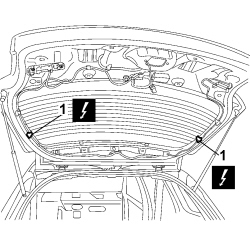
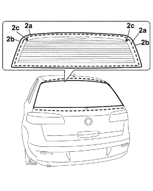
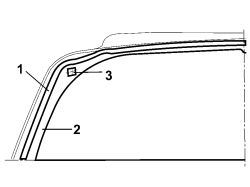
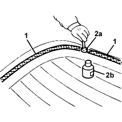
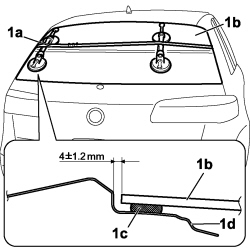

7035B14 REAR WINDOW GLASS - R.R INCLUDES CLEANING HOUSING
- Path
- Procedures > 70 FITTINGS > 7035 BODY WINDOW GLASSES > 7035B REAR WINDSCREEN > 7035B14 REAR WINDOW GLASS - R.R INCLUDES CLEANING HOUSING
- Kind
- repair procedure (removal / refitting; the operation number is the code)
- Applies to
- all engines; all production periods
- Interactive page
- https://sloeber94.github.io/elrnDB-fCrm/en/#/194001005
Applies to: all engines; all production periods
 Removing
Removing
 Refitting
RefittingDisconnect the negative battery terminal.
Description | Connector | |
|---|---|---|
BATTERY |
Op. 7015A58 INTERNAL TAILGATE MOULDING (ONE) - R+R
Op. 7015A04 TAILGATE INTERIOR PANEL - R+R
Op. 7015A07 TAILGATE SIDE TRIM - R&R
Op. 5050C34 REAR WIPER ARM WITH BLADE - R+R
1. Disconnect the heated rear windscreen electrical connections.
Description | Connector | |
|---|---|---|
1 | HEATED REAR WINDSCREEN |

Applies to: all engines; all production periods
- Fit the suction pads to work safely.
1. Apply a double layer of protective adhesive tape to the edges of the bodywork.
2. Use the vibrating knife with an appropriate blade and cut the sealant (2a) along the edges of the rearscreen (2b) working from the inside of the vehicle. Take care when cutting over the rearscreen centering side pins (2c).

Applies to: all engines; all production periods
- After having cut the bead of sealant, using the suction pads and with the assistance of a second mechanic, remove the rearscreen from the vehicle.
Applies to: all engines; all production periods
Refitting
Removing1. Using suitable equipment, cut and level the bead of sealant in the windscreen housing leaving a thickness of between 0.25 and 1 mm, taking care not to scratch the paintwork. The thickness of the sealant remaining in the housing will act as a support for the new bonding.
2. Thoroughly clean the windscreen housing using an air jet and degrease fully using heptane. When bonding, 60 minutes after the bead of sealant has been cut and levelled, the surface of the actual sealant must be treated using the special activating product and it is necessary to wait for 15 minutes before fitting the windscreen.
3. Clean and degrease the seats for the glass mountings using heptane. Replace the window adhesive mountings in the rearscreen housing with new ones from the parts dept.

Applies to: all engines; all production periods
- If necessary, retouch the paintwork.
New rearscreen preparation:
1. Degrease the serigraphed perimeter of the new rearscreen involved in the bonding using heptane.
2. Apply the glass adhesion promoter (primer) (2b) to the serigraphed perimeter using the wick (2a) supplied in the Kit.

Applies to: all engines; all production periods
- Remove the adhesive tape from the edges of the bodywork.
- Carry out a test fitting and centre the rearscreen perfectly.
- Using a spray gun apply a bead of sealant along the perimeter of the rearscreen as evenly as possible.
Component | Type | Description | Classification | Qty. | Validity |
|---|---|---|---|---|---|
Rear windscreen glass | Windscreen sealant | Product n° 71711976 | - | - |
- Place the rearscreen in the housing, with the assistance of a second mechanic, straight after applying the sealant and let it bed in.
1. Position the belt (1a), as illustrated, and tension it so that even pressure is exerted on the entire rearscreen to ensure that the matching between the glass (1b), sealant (1c) and rearscreen housing (1d) is correct.

Applies to: all engines; all production periods
- Before refitting the vehicle interior and exterior elements, check that there are no penetration points by carrying out a water leakage test.
- Connect the rearscreen electrical connections.
Description | Connector | |
|---|---|---|
HEATED REAR WINDSCREEN |
Op. 7015A04 TAILGATE INTERIOR PANEL - R+R
Op. 7015A07 TAILGATE SIDE TRIM - R&R
Op. 7015A58 INTERNAL TAILGATE MOULDING (ONE) - R+R
Op. 5050C34 REAR WIPER ARM WITH BLADE - R+R
- Connect the negative battery terminal.
Description | Connector | |
|---|---|---|
BATTERY |
Topics linked from this page (6)
- 5050C34 REAR WIPER ARM WITH BLADE - R+R
- 7015A04 TAILGATE INTERIOR PANEL - R+R
- 7015A07 <x>TAILGATE SIDE TRIM - R&R</x>
- 7015A58 INTERNAL TAILGATE MOULDING (ONE) - R+R
- A001 BATTERY
- P055 HEATED REAR WINDSCREEN